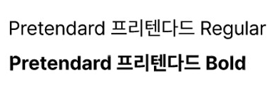

Style
#Clean
#Simple
- #깔끔한
- #복잡하지 않고 이해하기 쉬운
- #간단한
Font
- Pretendard
- 
Color
-
#b29492
-
#353535
-
#c38270
전체적으로 채도가 낮은 색상을
사용하여 차분하며, 깔끔해 보이는
분위기로 보일 수 있게 하였다.
Realization
제가 포트폴리오를 만드는 목적은 취업이다 보니 무엇보다 보기에 깔끔하고 한 눈에 읽히게 만들었습니다.
배운걸 활용해 제가 할 수 있는 최선을 다해 만들다 보니까 코드는 최대한 단순하지만
제가 원하는 방향으로 보일 수 있게 짰습니다.
position값이 여러개가 들어가 계속 이상하게 적용되었으나,묶는 값을 따로 여러개 주어 해결되었습니다.
이 때문에 코드가 복잡해보여서 아쉬움이 남지만, 제가 원하는 대로 보이도록 결과물이 나왔으니 만족합니다.
-
seoyoung이 가운데 위치하고 제일 앞에 보이길 원하지만, 글씨에 반이 사라져서 안보인다.
→ position으로 가운데로 갈 수 있게 해준 뒤 z-index 값을 주어 가장 앞에 보이게 해결하였다.
-
가운데 작성된 글자가 컨텐츠 위로 올라와 잘 안보이게 방해된다.
→ 문서와 겹치는 영역에는 seoyoung이 겹치는영역보다 뒤로 갈수 있게 js문서에 if문을 작성하여 해결하였다.
-
슬라이드 효과를 주면 position값이 먹질 않아 곤란하다.
→ swiper를 적용한 값을 position값이 정해져있는 큰 틀에서 벗어나게 해 적용될 수 있도록 하여 해결하였다.
-
오른쪽 My portfolio가 위치가 고정되지 않고 사라진다.
글씨를 가로가 아닌 세로정렬을 하고싶다.→ position :fixed 값을 주어 위치를 고정시켜주고,transform: rotate(-90deg) 값을 주어 세로정렬로 만들어
해결하였다.
My portfolio